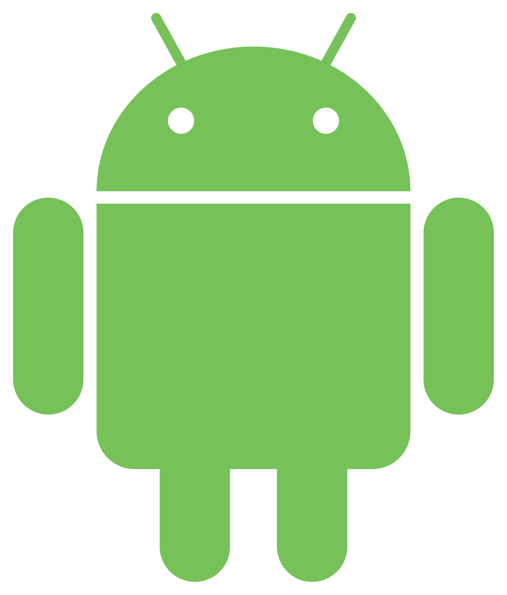

Ambientes de Desenvolvimento

As plataformas móveis são direcionadas para ambientes onde a mobilidade é essencial. Elas oferecem acesso conveniente a uma variedade de serviços e informações diretamente em dispositivos móveis, como smartphones e tablets. Esses ambientes incluem áreas urbanas, locais de trabalho remoto, setores de varejo, entretenimento e educação. As plataformas móveis são versáteis e facilitam atividades como compras online, acesso a entretenimento, gerenciamento de tarefas, aprendizado online e muito mais.
Linguagens mais Comuns
Para desenvolver aplicativos em plataformas móveis, uma variedade de linguagens de programação é comumente utilizada, dependendo da plataforma alvo. Para o desenvolvimento de aplicativos para dispositivos iOS por exemplo, a linguagem de programação principal é o Swift, desenvolvida pela Apple. O Swift é uma linguagem moderna, rápida e segura, especialmente projetada para o desenvolvimento de aplicativos iOS e macOS. Além do Swift, os desenvolvedores iOS também podem optar por usar Objective-C, uma linguagem mais antiga, mas ainda suportada pela Apple.

Android (Java/Kotlin): Para o desenvolvimento de aplicativos Android, as linguagens mais comuns são Java e Kotlin.Kotlin é uma linguagem moderna e oficialmente suportada pelo Google para o desenvolvimento de aplicativos Android.
iOS (Swift/Objective-C): Para o desenvolvimento de aplicativos iOS, as linguagens mais comuns são Swift e Objective-C. Swift é a linguagem mais recente e preferida da Apple para o desenvolvimento de aplicativos iOS, enquanto o Objective-C ainda é usado em alguns casos, especialmente em projetos legados.
Multiplataforma (React Native, Flutter, Xamarin): Para o desenvolvimento de aplicativos que visam várias plataformas móveis, existem várias opções: React Native: Desenvolvido pelo Facebook, permite o desenvolvimento de aplicativos usando JavaScript e React. Os aplicativos são compilados para código nativo, oferecendo um desempenho próximo ao de aplicativos nativos. Flutter: Desenvolvido pelo Google, utiliza a linguagem Dart para criar aplicativos com uma única base de código que podem ser executados em Android e iOS. Ele oferece um alto desempenho e uma experiência de usuário nativa. Xamarin: Desenvolvido pela Microsoft, permite o desenvolvimento de aplicativos usando C# e .NET. Ele permite o compartilhamento de grande parte do código entre as plataformas, resultando em um desenvolvimento mais rápido.
Ferramentas de Desenvolvimento

Além das linguagens de programação mencionadas anteriormente, no processo de desenvolvimento de aplicativos móveis, uma variedade de ferramentas e ambientes de desenvolvimento são frequentemente empregados para facilitar e agilizar o processo de criação. Estas ferramentas desempenham papéis essenciais em diferentes estágios do ciclo de vida do desenvolvimento de aplicativos, desde a concepção e design até a implementação e teste.
Android Studio: É o ambiente de desenvolvimento integrado (IDE) oficial para o desenvolvimento de aplicativos Android. Ele fornece uma variedade de recursos, incluindo um editor de código robusto, depurador, emulador de dispositivo, ferramentas de teste e muito mais.
Xcode: É o IDE oficial para o desenvolvimento de aplicativos iOS. Desenvolvido pela Apple, o Xcode oferece uma ampla gama de ferramentas para criar, depurar e testar aplicativos iOS, além de fornecer acesso ao simulador de iOS para testar aplicativos em diferentes dispositivos.
Visual Studio (com Xamarin): Para o desenvolvimento de aplicativos multiplataforma usando Xamarin, a ferramenta principal é o Visual Studio, que oferece suporte ao desenvolvimento de aplicativos móveis usando C# (sharp) e .NET. Ele possui recursos integrados de desenvolvimento, depuração e teste para Android e iOS.
Flutter SDK: Para o desenvolvimento de aplicativos usando Flutter, os desenvolvedores podem usar o Flutter SDK, que inclui o Flutter framework, um conjunto de ferramentas de linha de comando e plugins para vários IDEs, como Visual Studio Code e Android Studio.
React Native CLI: Para o desenvolvimento de aplicativos usando React Native, os desenvolvedores podem usar a React Native CLI (Command Line Interface), juntamente com um editor de código de sua escolha, como Visual Studio Code ou Atom.
Caracteristicas
As plataformas móveis, como iOS (Apple) e Android (Google), têm desempenhado papéis significativos na vida cotidiana dos usuários em todo o mundo. Esses sistemas operacionais oferecem uma infinidade de recursos e funcionalidades que atendem às necessidades e preferências de uma ampla variedade de usuários. Vamos explorar mais detalhadamente as características distintas de cada uma dessas plataformas:
IOS
1-Design Consistente: O iOS oferece uma experiência de usuário consistente em todos os dispositivos da Apple, com design limpo e elegante.
2-Fechado: A Apple mantém um controle rigoroso sobre o ecossistema iOS, desde o hardware até o software, o que pode limitar a personalização, mas também ajuda na segurança e estabilidade.
3-Desenvolvimento em Swift: A linguagem de programação principal para o desenvolvimento de aplicativos iOS é o Swift, criado pela Apple.
4-App Store: Todos os aplicativos iOS passam por um processo de revisão antes de serem disponibilizados na App Store, o que garante uma certa qualidade e segurança.
5-Integração com Hardware: Os aplicativos iOS podem aproveitar completamente o hardware da Apple, incluindo o processador A-series, o Touch ID ou Face ID, e a Apple Pencil, dependendo do dispositivo.
ANDROID 
1-Variedade de Dispositivos: O Android é utilizado por uma ampla variedade de fabricantes de dispositivos, resultando em uma grande diversidade de smartphones e tablets com diferentes especificações e preços.
2-Open Source: O Android é um sistema operacional de código aberto, o que permite uma maior customização por parte dos fabricantes de dispositivos e dos desenvolvedores de aplicativos.
3-Desenvolvimento em Java/Kotlin: A linguagem de programação principal para o desenvolvimento de aplicativos Android é o Java, embora o Kotlin tenha se tornado cada vez mais popular.
4-Google Play Store: A Google Play Store é a principal loja de aplicativos para dispositivos Android, oferecendo uma ampla gama de aplicativos, desde gratuitos até pagos.
5-Integração com Serviços Google: Os dispositivos Android oferecem uma integração profunda com os serviços do Google, como o Gmail, Google Maps, Google Drive, entre outros.